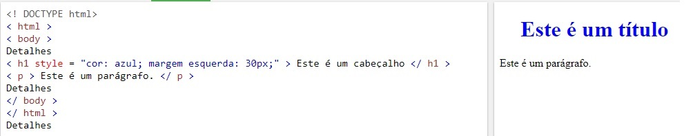

Quando um navegador lê uma folha de estilo, ele formata o documento HTML de acordo com as informações na folha de estilo.
Existem três maneiras de inserir uma folha de estilo:
Com uma folha de estilos externa, você pode alterar a aparência de um site inteiro alterando apenas um arquivo!
Cada página deve incluir uma referência ao arquivo da folha de estilo externa dentro do elemento link . O elemento link entra na seção head:
Uma folha de estilos externa pode ser escrita em qualquer editor de texto. O arquivo não deve conter nenhuma tag html. O arquivo da folha de estilo deve ser salvo com uma extensão .css.
Aqui está como o "mystyle.css" se parece:
body {
background-color: lightblue;
h1 {
color: navy;
margin-left: 20px;
}
Nota: Não adicione um espaço entre o valor da propriedade e a unidade (como margin-left: 20 px;). A maneira correta é:margin-left: 20px;
Uma folha de estilos interna pode ser usada se uma única página tiver um estilo exclusivo.
Estilos internos são definidos dentro do elemento style, dentro da seção head de uma página HTML:
Um estilo inline pode ser usado para aplicar um estilo exclusivo para um único elemento.
Para usar estilos in-line, adicione o atributo style ao elemento relevante. O atributo style pode conter qualquer propriedade CSS.
O exemplo abaixo mostra como alterar a cor e a margem esquerda de um elemento h1:
Dica: Um estilo inline perde muitas das vantagens de uma folha de estilos (misturando conteúdo com apresentação). Use este método com moderação.
Se algumas propriedades tiverem sido definidas para o mesmo seletor (elemento) em diferentes folhas de estilo, o valor da última folha de estilo lida será usado.
Suponha que uma folha de estilo externa tenha o seguinte estilo para o elemento h1:
h1 {
color: navy;
}
então, suponha que uma folha de estilo interna também tenha o seguinte estilo para o elemento h1:
h1 {
color: orange;
}
Se o estilo interno for definido após o link para a folha de estilo externa, os elementos h1 serão "laranja":
No entanto, se o estilo interno for definido antes do link para a folha de estilos externa, os elementos h1 serão "navy":
Qual estilo será usado quando houver mais de um estilo especificado para um elemento HTML?
De um modo geral, podemos dizer que todos os estilos vão "cascatear" em uma nova folha de estilo "virtual" pelas seguintes regras, onde o número um tem a prioridade mais alta:
Portanto, um estilo embutido (dentro de um elemento HTML específico) tem a prioridade mais alta, o que significa que ele substituirá um estilo definido dentro da tag "
, ou em uma folha de estilos externa ou um valor padrão do navegador.